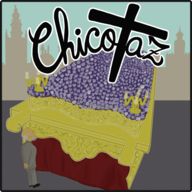

Taller de mapas · A Pulso Cofrade
Editor manual del Arenal con sprites originales
Guardar
Exportar mapa
Juego ↗
✋ Mover plano
↖ Seleccionar
▰ Calle
♟ Público
▤ Acera
⌂ Casa
◌ Borrar
✦ Probar paso
▧ Ajustar foto
↶ Deshacer
↷ Rehacer
✓ Cerrar polígono
× Cancelar puntos
Cargando mapa
Cargando geometría…
Preparando el editor…
— · —
Sin selección
−
+
Cargando el mapa y los materiales originales…